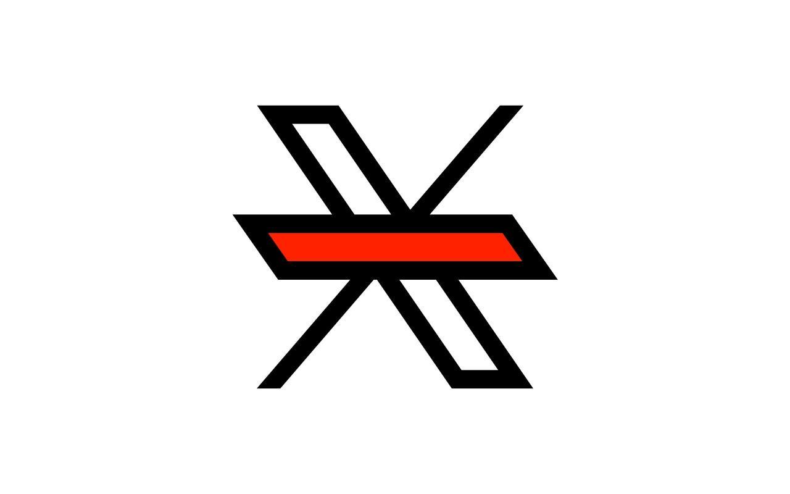

A Chrome extension that removes the "For You" tab from X and defaults to the "Following" timeline.
Bye "For You" is a simple and lightweight extension that removes the "For You" tab from the top of your feed and switches you back to the "Following" tab so you follow only who you actually follow.
This extension does not collect any user data and operates solely on the page content of X.com. No tracking, no data collection, no bloat.

This extension currently supports the following interface languages:
If you use X in another language and want the extension to work for you too, you can help!
Open a Pull Request or Issue with the translations used for the "For You" and "Following" tabs, including the language code:
'es': { forYou: 'Para ti', following: 'Siguiendo' }
Your contribution will help users around the world escape the "For You" trap.
Thanks for helping improve digital sanity! üôå
chrome://extensions/